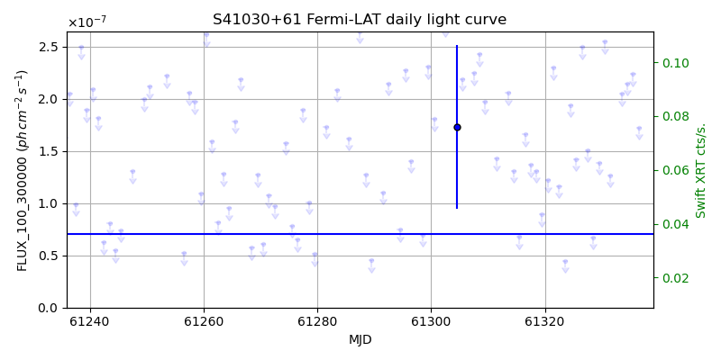
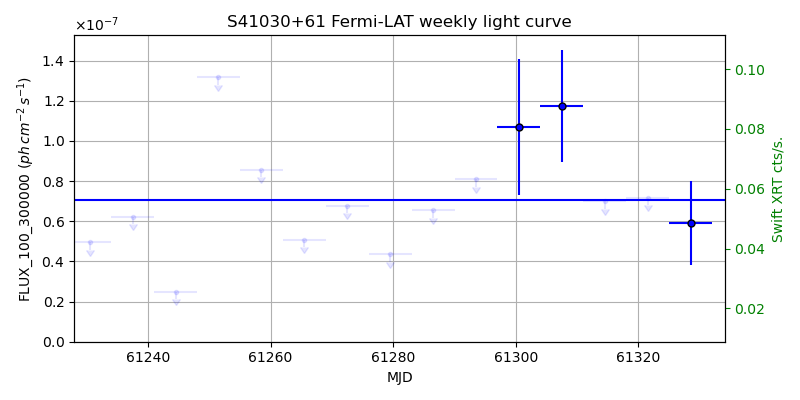
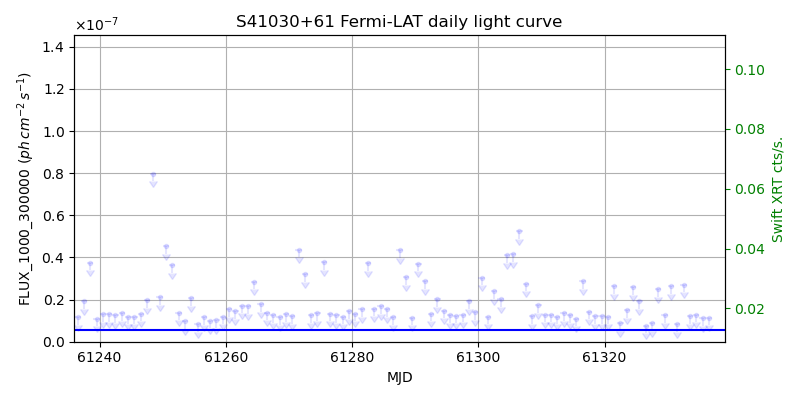
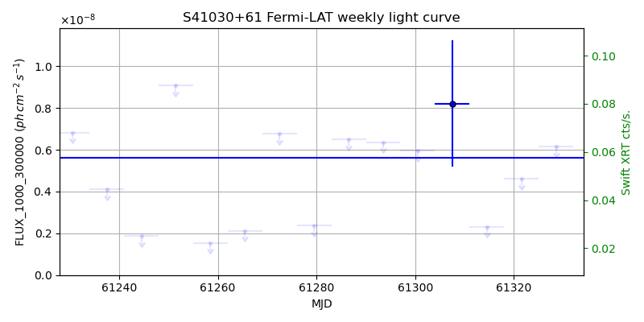

LAT Lightcurve site: https://fermi.gsfc.nasa.gov/ssc/data/access/lat/msl_lc/source/S4_1030p61
Swift site: https://www.swift.psu.edu/monitoring/source.php?source=S41030+61
NED: Query
Time of last update of this page: UT: 2026-10-24 15:22 (MJD: 61337.640)
| Property | Value |
|---|---|
| R.A. | 10:33:51.36 |
| Dec. | 60:51:07.2 |
| z | 1.408 |
| 3FGL SpectrumType | LogParabola |
| 3FGL PL Index | |
| 3FGL Flux_100_300000 | 7.06e-08 1 / (s cm2) |
| 3FGL Flux_1000_300000 | 5.62e-09 1 / (s cm2) |
| 3FGL Flux >200 GeV | 2.76e-12 1 / (s cm2) |
| 3FGL Extrap. Crab >200 GeV | 0.01 |
| 3FGL Flux After EBL Absorption >200GeV | 8.77e-15 1 / (s cm2) |
| 3FGL EBL Crab Fraction >200GeV | 0.00 |

| MJD | dMJD | Flux | dFlux | Frac3FGL | FracCrab>200GeV | EBLFracCrab>200GeV |
|---|---|---|---|---|---|---|
| 61332.50 | 0.50 | 3.12e-07 | 0.00e+00 | 0.00 | 0.00 | 0.00 |
| 61333.50 | 0.50 | 2.05e-07 | 0.00e+00 | 0.00 | 0.00 | 0.00 |
| 61334.50 | 0.50 | 2.15e-07 | 0.00e+00 | 0.00 | 0.00 | 0.00 |
| 61335.50 | 0.50 | 2.24e-07 | 0.00e+00 | 0.00 | 0.00 | 0.00 |
| 61336.50 | 0.50 | 1.72e-07 | 0.00e+00 | 0.00 | 0.00 | 0.00 |

| MJD | dMJD | Flux | dFlux | Frac3FGL | FracCrab>200GeV | EBLFracCrab>200GeV |
|---|---|---|---|---|---|---|
| 61300.50 | 3.50 | 1.07e-07 | 3.39e-08 | 1.52 | 0.02 | 0.00 |
| 61307.50 | 3.50 | 1.18e-07 | 2.78e-08 | 1.66 | 0.02 | 0.00 |
| 61314.50 | 3.50 | 6.99e-08 | 0.00e+00 | 0.00 | 0.00 | 0.00 |
| 61321.50 | 3.50 | 7.17e-08 | 0.00e+00 | 0.00 | 0.00 | 0.00 |
| 61328.50 | 3.50 | 5.90e-08 | 2.10e-08 | 0.84 | 0.01 | 0.00 |

| MJD | dMJD | Flux | dFlux | Frac3FGL | FracCrab>200GeV | EBLFracCrab>200GeV |
|---|---|---|---|---|---|---|
| 61332.50 | 0.50 | 2.70e-08 | 0.00e+00 | 0.00 | 0.00 | 0.00 |
| 61333.50 | 0.50 | 1.20e-08 | 0.00e+00 | 0.00 | 0.00 | 0.00 |
| 61334.50 | 0.50 | 1.29e-08 | 0.00e+00 | 0.00 | 0.00 | 0.00 |
| 61335.50 | 0.50 | 1.10e-08 | 0.00e+00 | 0.00 | 0.00 | 0.00 |
| 61336.50 | 0.50 | 1.15e-08 | 0.00e+00 | 0.00 | 0.00 | 0.00 |

| MJD | dMJD | Flux | dFlux | Frac3FGL | FracCrab>200GeV | EBLFracCrab>200GeV |
|---|---|---|---|---|---|---|
| 61300.50 | 3.50 | 5.96e-09 | 0.00e+00 | 0.00 | 0.00 | 0.00 |
| 61307.50 | 3.50 | 8.22e-09 | 3.03e-09 | 1.46 | 0.02 | 0.00 |
| 61314.50 | 3.50 | 2.31e-09 | 0.00e+00 | 0.00 | 0.00 | 0.00 |
| 61321.50 | 3.50 | 4.60e-09 | 0.00e+00 | 0.00 | 0.00 | 0.00 |
| 61328.50 | 3.50 | 6.14e-09 | 0.00e+00 | 0.00 | 0.00 | 0.00 |
--------------------------------------------------------- Using user-supplied coords: 10:33:51.36 60:51:07.2 2000 --------------------------------------------------------- FLWO UT night of: 2026-10-25 Local Sid. @ Midnight: 01:50 Sunset (-15.0) (local, UT): 18:49 01:49 Sunrise (-15.0) (local, UT): 05:27 12:27 Moonrise (local, UT): Moonset (local, UT): Moon phase: 0.99 --------------------------------------------------------- AzTime LSID UT Obj_el Obj_az Mn_el Mn_az Sep. --------------------------------------------------------- 18:49 20:39 01:49 5.5 346.2 26.2 94.5 103.9 19:19 21:09 02:19 4.2 349.6 32.4 98.6 103.7 19:49 21:39 02:49 3.3 353.2 38.6 103.2 103.5 20:19 22:09 03:19 2.8 356.8 44.7 108.4 103.3 20:49 22:39 03:49 2.6 0.5 50.6 114.6 103.1 21:19 23:09 04:19 2.9 4.2 56.2 122.3 102.9 21:49 23:39 04:49 3.5 7.8 61.2 132.2 102.7 22:19 00:09 05:19 4.6 11.3 65.5 145.3 102.6 22:49 00:39 05:49 6.0 14.7 68.4 162.2 102.4 23:19 01:10 06:19 7.7 17.9 69.4 182.2 102.2 23:49 01:40 06:49 9.8 21.0 68.2 202.0 102.0 00:19 02:10 07:19 12.3 23.8 65.1 218.6 101.9 00:49 02:40 07:49 15.0 26.3 60.8 231.3 101.7 01:19 03:10 08:19 17.9 28.6 55.7 240.9 101.6 01:49 03:40 08:49 21.1 30.6 50.1 248.5 101.4 02:19 04:10 09:19 24.4 32.3 44.3 254.6 101.2 02:49 04:40 09:49 27.9 33.6 38.2 259.8 101.1 03:19 05:10 10:19 31.5 34.5 32.1 264.4 100.9 03:49 05:40 10:49 35.1 35.0 26.0 268.5 100.7 04:19 06:10 11:19 38.8 35.0 19.9 272.4 100.5 04:49 06:40 11:49 42.4 34.5 13.8 276.2 100.4 05:19 07:11 12:19 46.0 33.3 7.8 279.9 100.2 05:27 07:18 12:27 46.9 32.8 6.2 280.9 100.1 --------------------------------------------------------- Moon up all night, no dark time. Dark hours >55 deg.: 0.00